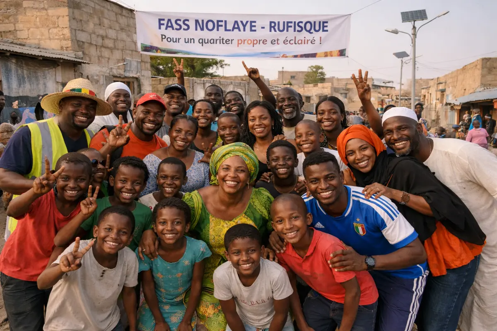

Fass Noflaye · Rufisque
Pour un quartier propre, sain et éclairé
Initiative communautaire d’assainissement, d’éclairage et de développement à Fass Noflaye – Rufisque.
Assainissement
Rues propres, caniveaux curés, déchets collectés.
Éclairage public
Des lampadaires pour des rues plus sûres la nuit.
Développement
Pavage, éducation et solidarité pour tout le quartier.

À propos du projet
Un projet citoyen pour Fass Noflaye
Nous sommes une initiative citoyenne visant à améliorer le cadre de vie du quartier à travers des actions d’assainissement, d’éclairage public, de pavage des routes et de sensibilisation à la santé et à l’éducation. Porté par les habitants, le projet repose sur la solidarité, l’engagement communautaire et la participation volontaire de tous.
Il est porté par les jeunes, les leaders communautaires et les habitants du quartier, avec le soutien de partenaires locaux.
Nos principales actions
Découvrez toutes les actions que nous menons au sein du quartier
Mobilisation citoyenne
Sensibilisation et participation active des habitants.
Assainissement
Nettoyage des rues, curage des caniveaux et gestion des déchets.
Éducation & citoyenneté
Activités éducatives et campagnes de sensibilisation pour renforcer le civisme et l’engagement citoyen.
Sensibilisation santé & social
Organisation de journées de sensibilisation sur l’hygiène, la prévention et la santé communautaire.
Éclairage public
Installation et maintenance de lampadaires pour plus de sécurité.
Pavage des routes
Aménagement et pavage des voies pour améliorer la mobilité et réduire la poussière et la boue.
Fass en chiffres
Découvrez les données clés de notre quartier
Ensemble, construisons un quartier meilleur
Ce projet est l’affaire de tous. Par un don, du matériel, un conseil ou une mise en relation, vous pouvez faire la différence. Ensemble, améliorons durablement notre quartier. En participant, vous contribuez directement à offrir un cadre de vie plus digne aux générations futures
Fass Noflaye en Images
Vidéo de présentation du projet
Nos projets
Restez informé des derniers projets du quartier
Cérémonie officielle de lancement des activités de l’association And Défar Fass Noflaye
La cérémonie officielle de lancement des activités de l’Association And Défar Fass Noflaye a réuni les acteurs locaux et les populations du quartier autour d’une vision commune de développement, de solidarité et d’engagement citoyen. Cet événement marque le point de départ des actions de l’association au service du bien-être et de l’amélioration du cadre de vie à Fass Noflaye.
Lancement du nouveau programme de pavage des deux mosquées de Fass
L’Association And Défar Fass Noflaye a procédé au lancement officiel du nouveau programme de pavage des deux mosquées du quartier de Fass. Cette initiative vise à améliorer l’accessibilité, la salubrité et la sécurité des lieux de culte, tout en offrant un cadre plus propre et plus digne aux fidèles.
Inauguration du PRN de la SONAGED
Ce poste de regroupement permettra d’organiser efficacement la collecte des déchets et de faciliter le travail des services d’assainissement, tout en sensibilisant les habitants à l’importance du respect de l’environnement et de la propreté urbaine. Cette réalisation s’inscrit dans une dynamique de collaboration entre les autorités, les partenaires et les acteurs communautaires engagés pour un quartier plus propre et mieux organisé.